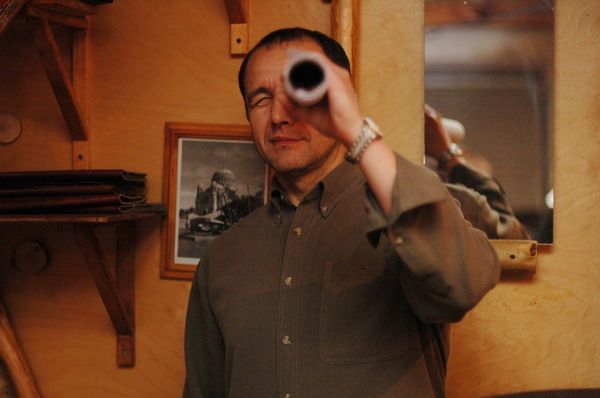
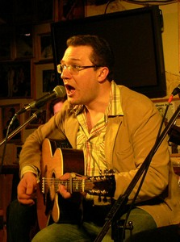
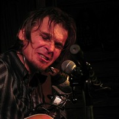
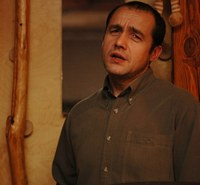
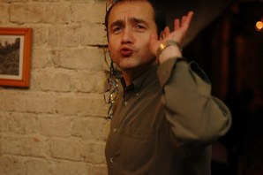
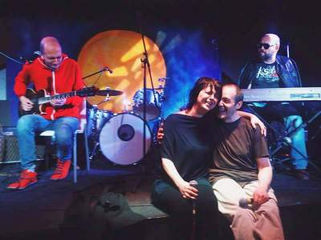

Юрий Костин,как он сам представляется, "Самый главный at Roadhouse Moscow (Дом у Дороги)" - Интервью записано в конце 2015 года в клубе "Дом у Дороги. v.3"
Рестораторством я занимаюсь с 1993-1994 года, это было в Armadillo, тогда же я познакомился с Петровичем, Арутюновым, Вороновым, Аграновским, Ломидзе, и проникся что ли. Меня зацепило.  Что-то честное, настоящее проскакивало в этой музыке. Не то, что вертелось тогда даже на каналах типа «2х2». Вроде все было новое и современное, но это казалось круче, честнее и правильнее как-то. Меня цепляло. И потом, когда были другие места работы, я везде старался эту тему протащить хоть чуть-чуть. В 1993-94 был такой парень Саша Никишин. Мы сдружились. Он сам был очень позитивный, он играл в группах,Cry Baby и No Problem. Если опустить все подробности и перипетии, то в 2003 г. у меня с товарищами получилось сделать кафе. Изначально не было идеи сделать место блюзовым, но была идея сделать это место с музыкой.. Опять же Саша Никишин помогал мне технически озвучить помещение. Потом я познакомился с Федором Романенко (по переписке), с тобой, с Вовкой Русиновым, с Грушей (Дмитрием Красивовым). Потом это все стало обрастать жизнью блюзовой, околоблюзовой, больше всего, наверное, тусовочной. И все вместе это был такой кайф. - Tы говоришь сейчас про Дом у дороги? Да - Разве он не был изначально блюзовым? Нет - Ты ж пришел туда если не сразу, то второй месяц? Да, но понимание как оно все должно быть, пришло не сразу. Не сразу наступает понимание того, что есть настоящий блюз, или просто настоящая музыка околоблюзовая, и что есть какая-то левизна... Может быть, ты помнишь, какое-то время у нас выступал такой замечательный болгарский гитарист Христо Кириллов. Сначала он поразил, а потом приходит понимание, что это шелуха в большей степени. Не в укор ему, но вот так было. На понимание понадобилось время. Наверное, год-полтора, чтобы с моих ушей, с моей головы слетела шелуха, вот тогда, собственно, блюз и начался… В полной мере. - Отделял зерна от плевел?  Я не специально. Но так вот приходило понимание. Когда Мишурис выступал первые пару раз, а Вадик Иващенко играл с гитарой на загривке - я был в диком восторге. Хаа-ха. Но прошло какое-то время и стало понятно, что цирк - это хорошо, но это другая история.- Не в загривке дело. Ти-Боун Уокер тоже с гитарой на загривке выступал. Это не значит. что он играл плохую музыку. Да, это хорошо, но все должно быть в меру и брать публику за горло правильнее, на мой взгляд, не цирком, хотя я не против цирка вообще, а все-таки эмоциями, которые есть в музыке. - Но любую музыку можно назвать эмоциональной. Я не про общие критерии. Как ты для себя сам определяешь, что настоящая музыка, а что - не очень? Где настоящие эмоции, подлинные?.. Я не про научные критерии… А вот тут хрен его знает, это все очень субъективно и словами трудно объяснить. Это только метод проб каких-то.  Вот помнишь к нам Лайтхаус (Robert Lighthouse) приезжал ? И не раз приезжал. Вот ничего он особо и не делает. Сидит такой мужичок, причем белый, с гитарой, которая и звучит-то кривовато. А на гармошке в этом холдере он играет и вовсе довольно криво. С точки зрения качества музыки это вообще ничего из себя не представляет. Приведи любого критика, и он опустит все ниже плинтуса с точки зрения гитарного искусства. Но там же что-то такое дикое, глубинное, первозданное, шаманское присутствует, что сносит мозг к чертовой матери. Ну это я про себя говорю, я не говорю, что у всех такие чувства. Кстати, после его визитов я очень сильно увлекся Бернсайдом (R.L.Burnside).- Hо они не очень-то похожи... Они очень непохожи, но Лайтхаус исполнял песню про бедного Мэтти (Poor Black Mattie), и что-то там меня зацепило, этот риф что ли, который просто просверлил мне мозг напрочь. И я стал его слушать, причем в разных исполнениях. и даже современные перепевки , потому что там основа такая, что не ухудшить, не испортишь никак. У меня в машине это звучит каждый день, не поверишь. - Ну этим записям лет 15 как минимум. Я пытался заниматься самоанализом в этом смысле, почему кого-то цепляет рюмка водки, а меня это. Возможно это покажется странным, но для себя лично я пришел к такому выводу, повторюсь, для себя лично, не претендуя ни на какую правду и ни на какие обобщения: в этой музыке есть "сила народная", если можно так сказать. Так мне кажется. А я с детства, с рождения был окружен русской народной музыкой. Этими глубинными сильными смыслами, с простыми совершенно словами и неким сильным чувством тоски или радости, чего угодно. - Что значит «окружен» - по радио и тв, или пели? Мама моя пела всегда, все дядьки, тетки пели всегда, чуть ли не каждый вечер, за столом. - Каким же образом русское народное у тебя трансформировалось в американское черное, где вместо пшеницы - кукуруза и хлопок?. Не знаю. Мне кажется, в этом есть родство какое-то. Дело не в текстах вовсе. Там есть что-то от народа, там и сям одно и то же. Кстати, на эту тему я с Писигиным как-то поговорил. Он говорит: это похоже на правду. И он изъездил всю Россию и зацепился за это. Потому что тут та же сила, и та же страсть, и та же боль и все остальное. Вот так вот. Но я не обобщаю. - Ну, начинка, понятное дело, народная. Но оформление то совсем другое. Понятие и представление о мелодии вообще другое... А это все не важно. Вот представь себе. Я до сих пор гораздо больше в блюзе люблю минорные блюзы, то, что в блюзе на самом деле редко… А это в блюзе редко, и это точно российское. Вот минорный блюз - это круче, чем просто блюз. - А у Бернсайда, по-моему, нет ничего такого минорного… Нет, но там есть такие рифы шаманские. - Шаманские рифы там реальные… Да, вот почему из наших Тамару люблю. Там такое погружение даже не в образ, а вот прям туда вот. - Я часто в Москве от разных людей слышал, что блюз - это для души, но это не может быть делом: почва не та, ударная доля не та...  Ты знаешь, когда начинался ДуД на Доватора, а я с приятелем тогда начинал, и он мне доверял очень, потому что мы друг друга знали в деле очень хорошо. И я сказал ему, что не буду делать то, что нравится людям вообще, а я буду делать то, что нравится мне. И я буду делать это хорошо, потому что мне это нравится. А Москва такой огромный город, что через год, два, максимум три найдется столько людей, которым нравится тоже самое, что у нас все будет зашибись. И я оказался прав. И я очень благодарен этому своему другу за то, что он меня тогда поддержал. В первый год были какие-то у него сомнения, что может быть зря… может быть что-то популярное...Но вот видишь как получилось. Но это просто удача. Это не бизнес. Дай Бог, зарабатываешь что-то на жизнь. Бизнес - это когда яхты, самолеты, острова… Сам видишь, как мы живем. Особенно сейчас. А мы – хорошо, если сводим концы с концами… - Говоря о концах с концами... Как ты относишься к тому, что большинство музыкантов имеют дневную работу? Я отношусь к этому хорошо.. а потому что те , кто сделал музыку средством заработка, там зачастую чувство и душа потерялись. Вот возьмем любимого мною как человека, но как музыканта уже нет, того же Левана Ломидзе. А когда люди занимаются любимым делом в свободное время, они эмоционально и морально отдают ему гораздо больше, на мой взгляд. - Какие люди приходят на концерты? Тут тоже нельзя обобщать. Публика самая разная. Социальные статусы разные абсолютно, интересы разные, запутинцы, противпутинцы… - Ну при чем тут это? Я скорее про социальные прослойки, или скорее по характеру, что за люди? Приходят посмотреть на нечто диковинное, или они хорошо знают, что такое блюз? И те, и другие. И есть большая прослойка людей, которые глубоко в теме, они знают что к чему и они ходят заранее настроить себя на получение удовольствия от концерта того или иного артиста. Есть люди, и я их вижу чуть ли каждый день, которые появляются в первый раз, особенно это заметно на джемах, сидят с открытыми ртами, а потом подходят с трясущимися руками и говорят: как? мы не знали, что такое может быть, настолько круто, сильно, такие музыканты.. как же так, а где же мы были? Ну вот так. Самые разные люди. И я помню прекрасно, было для меня показательным моментом, когда был концерт Фила Гая и за билет один парень заплатил монетками. Я не знаю, где он и собирал и как долго. Это, говорит, все что у меня есть. Человек черту душу продал, чтобы на билет потратиться. А кто-то при деньгах и ему все равно, сколько платить, просто получают кайф. Разные совершенно люди.  К сожалению, а может и к счастью, кто знает, толстосумов в нашей теме совсем не много. Потому что российский менталитет большинства этих толстосумов, он такой - я плачу, а ты дай мне то, что я хочу. А он выпил стакан-другой и начинает орать - сыграйте нам мурку. Может и к счастью, что их у нас нет или у нас их не много.Ну вот так. Уже много лет. Я привык и я не жду никаких спонсоров, что то кто-то придет и на блюдечке с голубой каемочкой принесет. Не придет. И не принесет. И не надо. Вот мы варимся… Тема живет, как бы ее не убивали разные обстоятельства, мы есть , значит все правильно - Есть же такое мнение, что настоящий блюз - это только черный, а то что у нас есть, это вроде как не товар. Смотря как к нему относиться. Но для меня первично чувство, повторюсь. Если в блюз, придуманный на другой земле, в других обстоятельствах, наш музыкант вкладывает свои искренние сильные глубокие чувства, то это все равно блюз и это круто, а если он это просто пытается имитировать, то тогда лажа. Вот так я к этому отношусь. - Ну что у нас впереди? Надеюсь, что долгая и богатая событиями жизнь, как в блюзе это постоянно происходит - 33 несчастья и 34 счастья. Будем жить, нам просто нельзя по-другому, чтобы ни случилось. - Так или иначе, можно сказать, ты лет 20 по крайней мере имеешь отношение к российскому блюзу. Как тебе кажется, что за это время изменилось принципиально, что не принципиально? На мой взгляд не изменилось ничего. - А за последние 15 лет? С начала нынешнего века? Мне кажется, стало больше музыкантов, которые интересуются этим, играют, и как всегда количество, просто по теории математической, отчасти превращается в качество. И меня очень радует, что есть музыканты, которые этим интересуются. А среди них есть те, которые в это погружаются и у них начинает получаться. И мне думается, их стало значительно больше. Не скажу, что я веду какую-то статистику. Но мне кажется так. У нас были разговоры, может быть даже и с тобой, несколько лет назад, что молодых-то нету. А они есть. И я их вижу живьем. И есть примеры. Когда-то там приходил паренек и, условно говоря, имитировал на джеме что-то такое, а сейчас он реально круто играет и чувствует. Их не много... Да их и не должно быть много. - Ну, в общем, я услышал все что хотел. Может, ты от себя что-то хотел добавить? Нет… Если про меня лично, меня вот эта вот вся история блюзовая, околоблюзовая, вся эта музыка, и все эти люди, которые в этой музыке, они уже не один раз вытягивали меня с такого дна… По жизни же всякая хрень случается, и думаешь, что все, что жить уже неохота, и незачем, самое главное. А потом эта музыка дает какие-то силы, общение с людьми. Как подумаешь, как же этим неграм доставалось, а они все равно пели, а я то что. Из-за какой-то ерунды тут раскис? Поэтому я себе не представляю никакой жизни вне этого. Хотя мне говорят, что ты же опытный чувак в общепитовском бизнесе, давай то, давай се.. . Не хочу. Интервью: А.Евдокимов  |